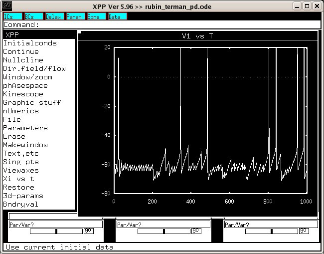

These are the model files for the paper: Rubin JE, Terman D (2004) High frequency stimulation of the subthalamic nucleus eliminates pathological thalamic rhythmicity in a computational model. J Comput Neurosci 16:211-35 These model files were supplied by Jonathan Rubin. Example use: Make sure you have xpp installed (http://www.math.pitt.edu/~bard/xpp/xpp.html) and start with a command (linux, although mac and windows xpp versions are available) xppaut rubin_terman_pd.ode Select File -> Read and choose rubin_terman_pd.ode.setnorm or rubin_terman_pd.ode.setpark for normal/PD Select InitialConds -> Go and you should see a figure created similar to fig 5 C, D from the paper: 